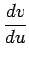

Begriff der geodätischen Linien
Durch jeden Punkt einer P(u,v) Fläche kann in jeder durch den Differentialquotienten  bestimmten Richtung auf der Fläche eine gedachte Kurve verlaufen, die geodätische Linie genannt wird. Sie spielt auf der Fläche die gleiche Rolle wie die Gerade auf der Ebene und zeichnet sich durch die folgenden Eigenschaften aus:
-
Die geodätischen Linien sind die Linien der kürzesten Entfernung zwischen zwei Punkten auf einer Fläche.
-
Wenn ein materieller Punkt, der gezwungen ist, auf einer vorgegebenen Fläche zu bleiben, von einem anderen auf der gleichen Fläche befindlichen materiellen Punkt angezogen wird, dann bewegt er sich in Abwesenheit anderer äußerer Kräfte auf einer geodätischen Linie.
-
Wird ein elastischer Faden über eine vorgegebene Fläche gespannt, dann nimmt er die Form einer geodätischen Linie an.
(S. auch geodätische Linie, sphärische Geometrie).